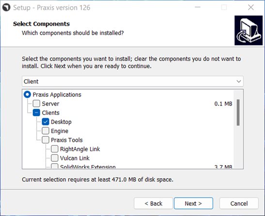

Run Pre-Requisite Installation like Server before beginning the Client setup.
In the client machine, after executing the Installer, Select Client option on the component selection page.

Proceed with the standard installation steps and click Install to proceed with the Installation in Client Machine.
Once installation is completed, Praxis is automatically launched. Provide the Server name or IP address to connect with Praxis server.
Once connected, Praxis displays the Sign up prompt. Accept defaults and click OK to proceed. Praxis starts at the Library page and displays library parts.